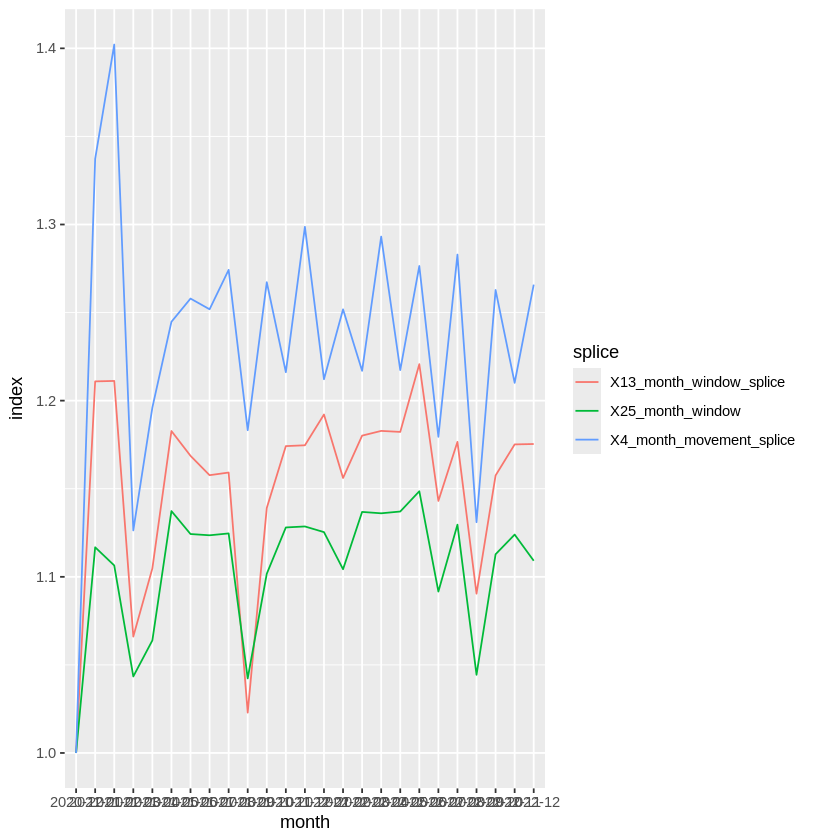
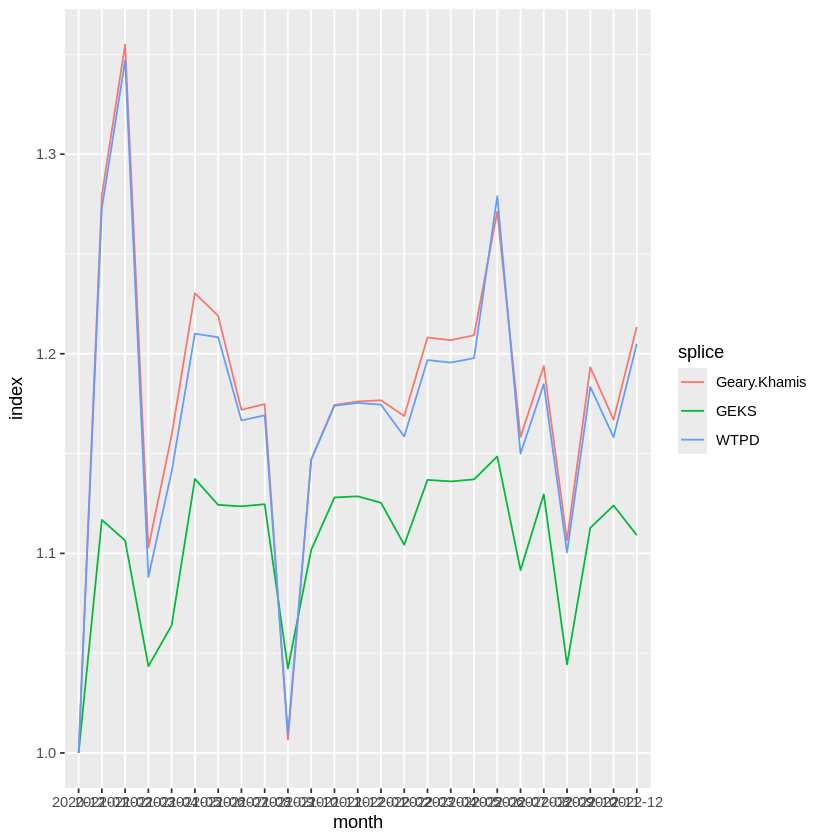

In order to do the exercises we need to load the packages and prepare the dataset first.
Show the code
# Install required packagesinstall.packages(c('PriceIndices', 'IndexNumR'), repos='https://cran.r-project.org')# Set the options such that unnessecary warnings are muted#knitr::opts_chunk$set(echo = TRUE)#options(tidyverse.quiet = TRUE)
Installing packages into ‘/usr/local/lib/R/site-library’
(as ‘lib’ is unspecified)
also installing the dependencies ‘plyr’, ‘stringdist’, ‘lpSolve’, ‘checkmate’, ‘reshape’, ‘reclin2’, ‘strex’, ‘lazyeval’, ‘crosstalk’
It is possible to do the exercises using the following packages. However, you can load and use other packages if you want.
Show the code
library(PriceIndices) # for price index calculationslibrary(IndexNumR) # for price index calculationslibrary(tidyverse) # for data analysislibrary(ggplot2) # for graphics
Attaching package: ‘IndexNumR’
The following object is masked from ‘package:PriceIndices’:
elasticity
── Attaching core tidyverse packages ──────────────────────── tidyverse 2.0.0 ──
✔dplyr 1.2.1 ✔readr 2.2.0
✔forcats 1.0.1 ✔stringr 1.6.0
✔ggplot2 4.0.3 ✔tibble 3.3.1
✔lubridate 1.9.5 ✔tidyr 1.3.2
✔purrr 1.2.2
── Conflicts ────────────────────────────────────────── tidyverse_conflicts() ──
✖dplyr::filter() masks stats::filter()
✖dplyr::lag() masks stats::lag()
ℹ Use the conflicted package (<http://conflicted.r-lib.org/>) to force all conflicts to become errors
Dataset
We use the same data as yesterday from the set of food prices in Italian supermarkets provided by Banca d’Italia, Università Campus Bio-Medico and Università degli Studi della Tuscia. The complete dataset is available here. We aggregated the data by month and added artificial quantities.
Show the code
data <-read.csv("https://raw.githubusercontent.com/UN-Task-Team-for-Scanner-Data/alternative-data-sources-price-statistics/refs/heads/main/data/monthly_avg_price_with_qty.csv")# Filter for bananas in Store 3data <- data %>%filter(COICOP5 %in%"Salad"& store_id %in%3) %>%mutate(product_id =as.numeric(factor(product)),volume = price * quantity,total_quantity =NULL, quantity_share =NULL)# Extract package size from product description and convert to kgdata <- data %>%mutate(size =case_when(str_sub(product, -2, -1) =="kg"~as.numeric(str_extract(product, "(\\d+).(\\d+)")),str_sub(product, -2, -1) =="gr"~as.numeric(str_extract(product, "(\\d+).(\\d+)")) /1000,str_sub(product, -2, -1) =="pz"~as.numeric(str_extract(product, "(\\d+).(\\d+)")) * .18))# Adjust price to "per kg" and quantity to "kg sold"data <- data %>%mutate(price = price / size, quantity = quantity * size)
Index calculation
The exercise can be done using either the IndexNumR or PriceIndices package. Choose the one you prefer.
Exercise 1
Format the dataset such that it works as input for one of the packages and name the data.frame input.
Show the code
# Input for PriceIndices functionsinput_pi <-data_preparing(data,time ="month_year", # convert the period into date format and rename the column andprices ="price",quantities ="quantity",prodID ="product_id")cat("An input data.frame for PriceIndices:\n\n")head(input_pi)# Input for IndexNumR functionsinput_in <- data %>%mutate(pervar =monthIndex(ym(data$month_year)))cat("\n\nAn input data.frame for IndexNumR:\n\n")head(input_in)# A data.frame that includes all columnsinput <-cbind(input_in, input_pi)
An input data.frame for PriceIndices:
A data.frame: 6 × 4
time
prices
quantities
prodID
<date>
<dbl>
<dbl>
<chr>
1
2022-12-01
7.265010
31.13706
1
2
2020-12-01
8.062500
19.39783
2
3
2021-01-01
8.304435
19.45712
2
4
2021-02-01
8.062500
19.29304
2
5
2021-03-01
8.062500
21.15349
2
6
2021-04-01
8.062500
16.70443
2
An input data.frame for IndexNumR:
A data.frame: 6 × 11
month_year
product
store_id
COICOP5
COICOP4
price
quantity
product_id
volume
size
pervar
<chr>
<chr>
<int>
<chr>
<chr>
<dbl>
<dbl>
<dbl>
<dbl>
<dbl>
<dbl>
1
2022-12
bonduelle carta delle insalate ricetta croccante 230.0 gr
3
Salad
Vegetable
7.265010
31.13706
1
226.2110
0.23
25
2
2020-12
cuore lattuga 160.0 gr
3
Salad
Vegetable
8.062500
19.39783
2
156.3950
0.16
1
3
2021-01
cuore lattuga 160.0 gr
3
Salad
Vegetable
8.304435
19.45712
2
161.5804
0.16
2
4
2021-02
cuore lattuga 160.0 gr
3
Salad
Vegetable
8.062500
19.29304
2
155.5501
0.16
3
5
2021-03
cuore lattuga 160.0 gr
3
Salad
Vegetable
8.062500
21.15349
2
170.5500
0.16
4
6
2021-04
cuore lattuga 160.0 gr
3
Salad
Vegetable
8.062500
16.70443
2
134.6795
0.16
5
Exercise 2
Calculate a GEKS-Index using the Fisher formula from December 2020 to December 2022 without splicing. Hint: The GEKS-Fisher method is called “geks” in the PriceIndices package
Show the code
# GEKS-Fisher with PriceIndices::price_indicegeks_pi <-price_indices(input,start="2020-12",end="2022-12",formula="geks",window=25,interval=TRUE)# GEKS-Fisher with IndexNumR::GEKSIndexgeks_in <-GEKSIndex(input %>%filter(pervar <=25),pvar ="price",qvar ="quantity",pervar ="pervar",prodID ="product_id",indexMethod ="fisher",window =25,)# Both packages in one data.framedata.frame(month = geks_pi$time,indexNumR = geks_in,PriceIndices = geks_pi$geks)
A data.frame: 25 × 3
month
indexNumR
PriceIndices
<chr>
<dbl>
<dbl>
2020-12
1.000000
1.000000
2021-01
1.116764
1.116764
2021-02
1.106457
1.106457
2021-03
1.043450
1.043450
2021-04
1.063910
1.063910
2021-05
1.137317
1.137317
2021-06
1.124290
1.124290
2021-07
1.123579
1.123579
2021-08
1.124631
1.124631
2021-09
1.042347
1.042347
2021-10
1.101737
1.101737
2021-11
1.128024
1.128024
2021-12
1.128591
1.128591
2022-01
1.125366
1.125366
2022-02
1.104308
1.104308
2022-03
1.136841
1.136841
2022-04
1.136055
1.136055
2022-05
1.137076
1.137076
2022-06
1.148578
1.148578
2022-07
1.091641
1.091641
2022-08
1.129602
1.129602
2022-09
1.044392
1.044392
2022-10
1.112807
1.112807
2022-11
1.123980
1.123980
2022-12
1.109119
1.109119
Exercise 3
Now calculate spliced GEKS-Fisher indices. Use a window splice with a window length of 13 months as well as a movement splice with a window length of 4 months. Compare all three indices.
Show the code
# Window splice with PriceIndices::price_indicegeks_window_pi <-price_indices(input,start ="2020-12",end ="2022-12",formula ="geks_splice",window =13,interval =T,splice ="window")# Window splice with IndexNumR::GEKSIndexgeks_window_in <-GEKSIndex(input %>%filter(pervar <=25),pvar ="price",qvar ="quantity",pervar ="pervar",prodID ="product_id",indexMethod ="fisher",sample ="matched",window =13,splice ="window")# Movement splice with PriceIndices::price_indicegeks_movement_pi <-price_indices(input,start="2020-12",end="2022-12",formula="geks_splice",window=4,interval=TRUE,splice ="movement")# Movement splice with IndexNumR::GEKSIndexgeks_movement_in <-GEKSIndex(input %>%filter(pervar <=25),pvar ="price",qvar ="quantity",pervar ="pervar",prodID ="product_id",indexMethod ="fisher",sample ="matched",window =4,splice ="hasp", # "window", "movement", "half", "mean", "fbew", "fbmw", "wisp", "hasp" or mean_pub" are the optionsimputePrices =NULL)# The results in one data.framecomparison <-data.frame(month = geks_pi$time,"25_month_window"= geks_pi$geks,"13_month_window_splice"= geks_window_pi$geks_splice,"4_month_movement_splice"= geks_movement_in )# Visualising the resultspivot_longer(comparison, cols =-1, names_to ="splice", values_to ="index") %>%ggplot(., aes(x = month, y = index, group = splice, color = splice)) +geom_line()

Exercise 4
Calculate an index using the weighted time product dummy or the Geary-Khamis method. From December 2020 to December 2022 and compare it to the geks index.
Show the code
# WTPD with PriceIndices::price_indicewtpd_pi <-price_indices(input, start="2020-12", end="2022-12",formula="tpd", window=25, interval=TRUE)# WTPD with IndexNumR::WPTDIndexwtpd_in <-WTPDIndex(input %>%filter(pervar <=25),pvar ="price",qvar ="quantity",pervar ="pervar",prodID ="product_id",window =25 )# Geary-Khamis with PriceIndices::price_indicegk_pi <-price_indices(input, start="2020-12", end="2022-12",formula="gk", window=25, interval=TRUE)# Geary-Khamis with IndexNumR::WPTDIndexgk_in <-GKIndex(input %>%filter(pervar <=25),pvar ="price",qvar ="quantity",pervar ="pervar",prodID ="product_id",window =25 )# The results in one data.framecomparison <-data.frame(month = geks_pi$time,"GEKS"= geks_pi$geks,"WTPD"= wtpd_in,"Geary-Khamis"= gk_pi$gk )# Visualising the resultspivot_longer(comparison, cols =-1, names_to ="splice", values_to ="index") %>%ggplot(., aes(x = month, y = index, group = splice, color = splice)) +geom_line()

Bonus Calculate a GEKS-Jevons index and compare it to a chain linked bilateral Jevons index.
Show the code
# WTPD with PriceIndices::price_indicejevons_pi <-price_indices(input, start="2020-12", end="2022-12",formula="chjevons", interval=TRUE)# WTPD with IndexNumR::WPTDIndexjevons_in <-priceIndex(input %>%filter(pervar <=25),pvar ="price",qvar ="quantity",pervar ="pervar",prodID ="product_id",indexMethod ="jevons",output ="chained" )# GEKS-Jevons with PriceIndices::price_indicegeks_jevons_pi <-price_indices(input, start="2020-12", end="2022-12",formula="geksj", window=25, interval=TRUE)# GEKS-Jevons with IndexNumR::WPTDIndexgeks_jevons_in <-GEKSIndex(input %>%filter(pervar <=25),pvar ="price",qvar ="quantity",pervar ="pervar",prodID ="product_id",indexMethod ="jevons", )# The results in one data.framecomparison <-data.frame(month = jevons_pi$time,"GEKS-Jevons"= geks_jevons_pi$geksj,"Jevons"= jevons_in )# Visualising the resultspivot_longer(comparison, cols =-1, names_to ="splice", values_to ="index") %>%ggplot(., aes(x = month, y = index, group = splice, color = splice)) +geom_line()